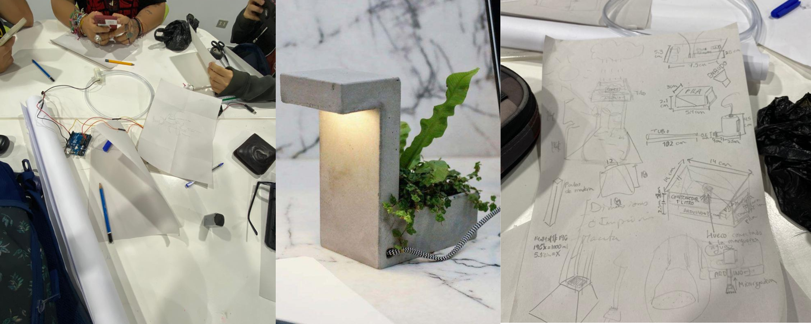

Semana 10
CLASE VIRTUAL
En esta clase continuamos con los trabajos manuales, modificamos algunas cosas de nuestra maqueta base, hicimos bocemos con medida para poder llegar a hacerlo en 3D, vimos opciones de como podríamos elaborar nuestra maceta, sea con acricilo. impresion 3D o reutilizar una maceta ya existente y modificarla para poder hacer nuestro sistema de riego. SAl final nos decidimos por la impresion 3D ya que sería más practico y resistente para nuestro proyecto.